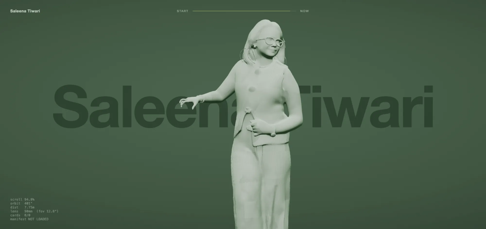

Case study / 006
Building the Saleena Tiwari showcase: memories in orbit
A birthday gift for my partner. A pale statue of her stands on a rock in a green void, and 21 memories wind round her as you scroll, like the steps of a spiral staircase round its column.
This drawing needs WebGL, which this browser has turned off.
- orbit 60.0°
- distance 10.77 m
- lens 60 mm
- cards alive 0
- featured none
01
Intro
This was the last stop of a bigger gift. For her birthday on 3 August 2026 I built Project Tiwari, a small 3D world you walk through. At the end of the walk there's a gate, and the gate opens the showcase. The gate went live that evening.
The idea is easy to say. She stands still in the middle, and the memories go round her. The camera, the cards and the light all exist to make that one sentence feel true as you scroll.
Fig. 1 is the whole system with her photos taken out. Scroll through it and the camera walks once round her, the way the real page does. The green frame shows what that camera sees.
The reference. The look was modelled on theyearofgreta.com. The camera path was measured against it, so it's credited here.
02
The brief
I knew how the cards should move long before I knew how to build it. I wrote it down the way I'd say it:
Like a spiral stair design, with a model in the middle.
Then the rules that came out of that picture. Each one is something you can check by eye, which is what made them useful.
- Start at the bottom left.
Wrap behind her, come round the front, leave at the top right.
- Nothing off the screen.
Except while it's arriving or leaving.
- Closer to her than to the camera.
- Move like a rope.
One after another, in sequence. Never stacked.
- Small, then big, then small.
Grow near the middle of the screen, shrink on the way out.
- Nothing fades.
The motion does the revealing.
- Flexible, like card.
Not too much bending. Subtle.
03
Five ways it failed
The cards were the hard part. Five approaches looked reasonable and each failed in its own way.
Each loop below rebuilds one of them on the scene's own camera path, so you can watch the failure instead of reading about it. The dashed line is the edge of the screen. The sixth loop runs the code that shipped.
Fig. 3 Five rejected approaches and the one that shipped. Rebuilt here as diagrams on the real camera path; the sixth runs the shipped card code.
04
One card first
The rule that finally got it working was about order, not maths. Tuning every card at once, and fixing path and size together, kept moving the problem around. So the work went in a fixed order:
One card, path only. Then its size. Then all 21, on the same rules.
-
1. One card, path only
Card 10 on its own, isolated by adding
?only=10to the address. A test harness drove the scroll in a headless browser and recorded where the card landed on screen at 41 points along the scroll. This is that recording, taken while the path was still being tuned. -
2. Then its size
Size is decided on the screen, not in the world. A card's height runs from 15% of the frame to 40%, peaking the first time it comes square-on across her front, then falling away and staying down. The camera's push in is divided back out, so the curve depends only on the card's own life.
-
3. Then all 21
The same rules, staggered. The cards run on their own clock, the rope's, which the readout shows. Each card's big moment comes 0.0295 after the last on that clock, from 0.19 to 0.78, and each card lives for 0.24 of it. So about 8 are alive at once: one featured, the rest small. The last card is gone by 0.953, and she holds the screen alone after that.
-
4. And a spring at the start
For the first 5.5% of the scroll the rope runs fast and lands with card 0 already in focus, then settles to the page's pace. The camera never speeds up; only the cards do. You can see it as the squeezed curves on the left edge.
05
Why the cards had to move
In the first version the cards didn't move at all. They hung on a fixed spiral 1.8 metres out from her, one full turn from below her feet to over her head, and the camera's orbit made the rope flow past. It looked like the right model. Nothing could bounce, because nothing could double back.
Then I measured it. A card that stands still can only cross the screen in the direction the camera turns, and this camera only turns one way. Across both window widths and both directions of life, cards entered on the right every time, at x +0.47 to +0.48. Bottom left was out of reach, however it was tuned.
So in what shipped, each card has its own path, but not a flight path. Every card is born behind her and below the frame, then turns 800 degrees round her, 2.2 turns, while it climbs from 0.05 to 2.75 metres. The spiral draws in from 1.55 metres at her ankles to 1.00 over her head, and swings out to 2.05 while a card is low enough to hit the rock. Its angle and its height only ever move one way, which is exactly what the flight paths got wrong.
First version
What shipped
06
The camera was measured, not set by eye
The camera is a table of keyframes, solved against frames of the reference by measurement. Over the whole scroll it orbits from 60 to 420 degrees, because her face points along 60, not 0. It moves in from 10.77 to 7.56 metres and lengthens its lens from 60 to 92 millimetres, so she grows from 55% of the frame to 95%.
The first version turned from the very start. What shipped spends the first 12% of the scroll on a push instead: 10.77 to 9.95 metres, a quarter of the whole push in, against only 12 degrees of turn. Then the orbit speeds up to make up the arc, and both ends stay where they were.
camera-path.js, plotted. Solid is what shipped, dashed is the first version; dots are keyframes. Drag across a plotDrag the slider to move the camera. It's the same scroll as Fig. 1.On a phone. The lens is set vertically, so her framing survives any screen shape. The spiral doesn't: on narrow screens it draws in, down to 0.46 of its radius, and no card is ever wider than 82% of the screen.
07
Her, and the light
The statue isn't sculpted by hand. It came from one photograph through Tripo's image-to-3D model, and I decimated it and compressed it with Draco in Blender: 89,999 triangles for her, 60,000 for the rock, 1.73 MB for the whole scene.
What I made is the surface. A pale green marble with veins drawn procedurally on a canvas, a clearcoat of 0.18, a little sheen, and a fresnel rim so her edge lifts off the green. Point at her and the rim rises from 1.00 to 1.26 while the camera eases in by 1% of its distance. Testing the pointer against 89,999 triangles took 8.4 ms, so it marches a 4 cm grid of her baked at load instead.
The biggest single fix was the fog. At a density of 0.062 it lifted the rock's darkest tones by 14 and greyed everything evenly, because fog works on distance and the rock sits at the same depth as she does. It couldn't fade the base without fading her. At 0.012 the rock measures within half a point of where it sat with no fog at all.
| Fog | Rock L | Rock p5 | Her L |
|---|---|---|---|
| 0.000 | 42.4 | 30.1 | 129.3 |
| 0.062 | 52.4 | 44.2 | 117.7 |
| 0.012 | 42.9 | 31.1 | 128.8 |
08
Like card, not cloth
The cards bend with how fast you scroll. One vertex shader bows a card along its width, twists its corners a little and adds a slow ripple, all scaled by one number, uFlex, which comes from your scroll speed.
That speed is damped twice before it reaches the card. The scroll position glides toward where you are, and the bend eases toward that speed, so a flick becomes a swell instead of a snap. When you stop, it settles to a faint ripple. The card itself already hangs with a slight bow, an arc of 4.3 times the spiral's tightest radius, so it reads as a panel on a curve, not a moulded shell.
materials.js, verbatim. Scroll this page and it bends as it would in the showcase, where the scene is a 600vh track. Thin line: speed. Thick line: the bend that reaches the card.09
The memories
Real photos from real phones are messy, and each problem needed its own answer. The filenames are the captions: I named each file the way I wanted it read, and the prep script turns the name into the caption instead of inventing text.
- Most of them are portrait.
15 of the 21 are tall, and every frame is 1440 by 1080. A centre crop was tried first and rejected, because it cut out what the photo was about. So each one is shown whole, over a blurred, darkened copy of itself.
- Phones store rotation in odd places.
6 clips are stored landscape with a rotation of −90 in their side data. iPhone photos keep it in a HEIC tag that some tools read past. Both are applied before anything reaches the browser.
- They share one green world.
At rest each card is near mono, 16% colour, pulled 13% toward the world's green, with its shadows lifted, so 21 photos sit together without fighting. Point at the featured card and colour sweeps across it on a diagonal; a video memory starts playing as the sweep begins.
Source
Frame, 1440 × 1080
prep_media.py, rebuilt here. A and B mark its top and bottom edges. "What the card shows" outlines the 16:9 window the card shader takes from the middle of each 4:3 frame.Before the statue. An earlier gift, For Saleena, was a scrapbook: a 7-spread flipbook that turned on scroll, keys or a click, with 8 easter eggs hidden in it, and a ring of 11 photos and videos round a low-poly voxel figure of 1,895 triangles.
10
Try it
The real thing, running in this page. Scroll inside it to walk round her. On a computer, point at her, or at the card in front of her.

- Memories
- 21
- Photos and videos
- 14 and 7
- Triangles in her
- 89,999
- Triangles in the rock
- 60,000
- Whole scene, compressed
- 1.73 MB
- Cards alive at once, at most
- 9
11
Conclusion
At the start I thought the answer was to hold the cards still and walk the camera round them, the way you'd walk round a staircase. That gave a rope that couldn't bounce, and it could only ever cross the screen one way.
What shipped keeps the staircase and lets each card walk it. Every card climbs the same spiral in its own turn, born low behind her on the left, and its angle and its height only ever move forward. Once that held, what was left was making her look like she was worth walking round.